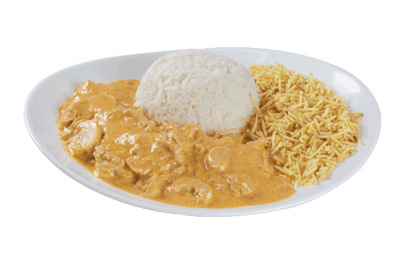

Receita de Strogonoff de frango!

Ingredientes:
- (500g) de peito de frango picado
- Uma cebola inteira
- Três dentes de alho picado
- Duas colheres de ketchup
- Uma colher de mostarda
- Uma lata de milho
- (300g) de Champignon
- Sal a gosto
- Duas latas de creme de leite
Modo de preparo:
- Coloque o alho e a cebola para refogar
- Coloque todo peito de frango e deixe refogando com o alho e a cebola
- quando estiver refogado, coloque a mostarda e o ketchup
- logo depois coloque o Champignon, milho e sal a gosto
- Para finalizar coloque o creme de leite com o fogo desligado
Aquela sexta-feira com feijoada é sempre bom né? aqui segue a receita!
Está com vontade de comer uma comida nordestina, tem na página do nosso parceiro recepedia segue o link da receita.